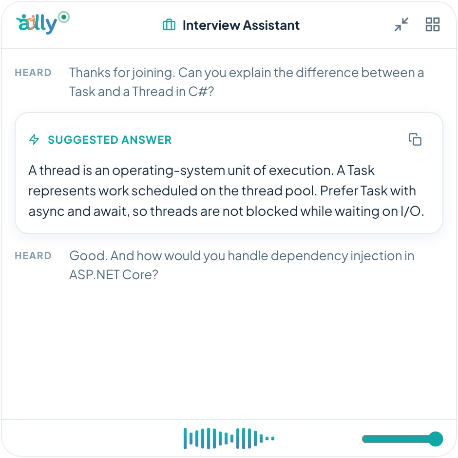

Interview assistant
AI interview assistant for Windows
The Interview Assistant mode listens for questions and suggests a short answer drawn from your own resume and notes. It is built for preparation, practice sessions and your own recordings.
- Your resume as contextAdd your resume as a reference file so suggestions come from your real experience. Ally does not start until it is added.
- Short answersSuggestions are brief enough to say out loud, with a longer option when you want more detail.
- Practice modeRun a mock interview with a friend or a recording and see what Ally suggests.
- You stay in chargeAlly suggests; you decide what to say.

Questions
Is it allowed in a real interview?
That depends on the employer and the rules of the interview. Many interviews prohibit outside help. Read the rules before you use any assistant, and do not use Ally where it is not allowed.
Does it work offline?
Yes. Speech recognition and the AI can run entirely on your PC.
More: Meeting notesLecture notesOffline AI assistantGeneral FAQ